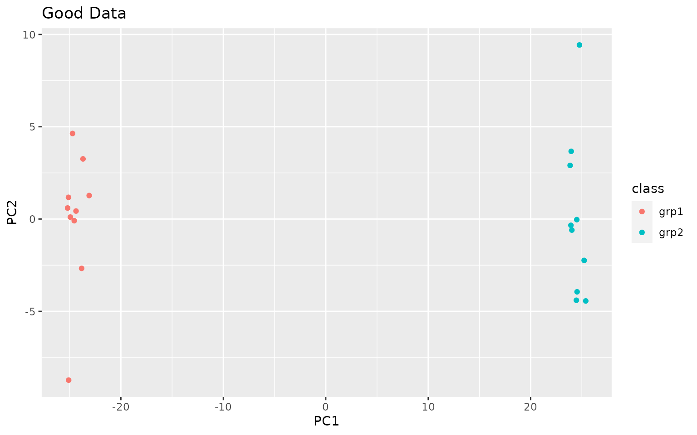
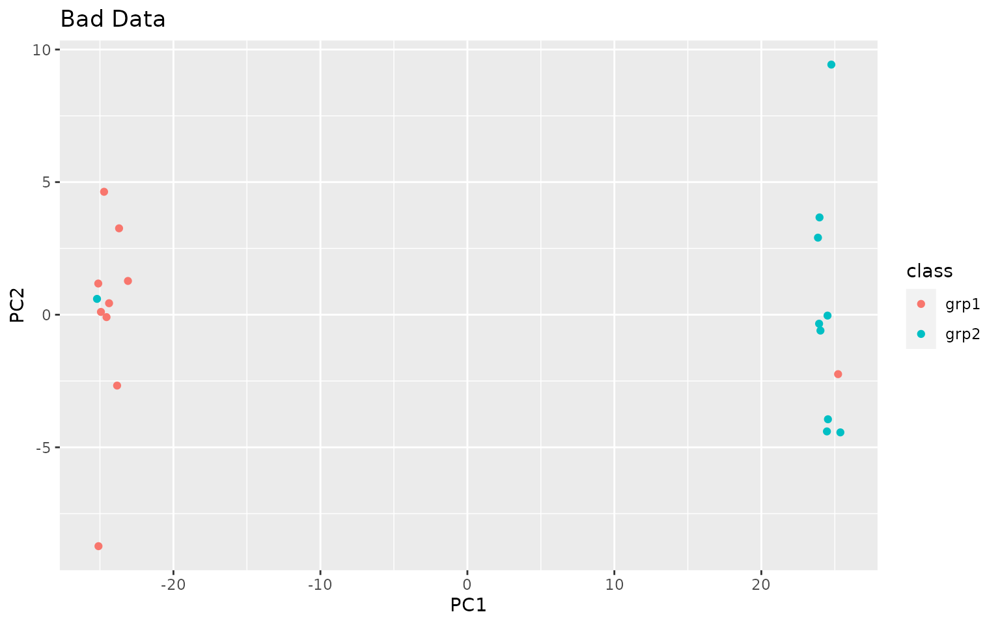
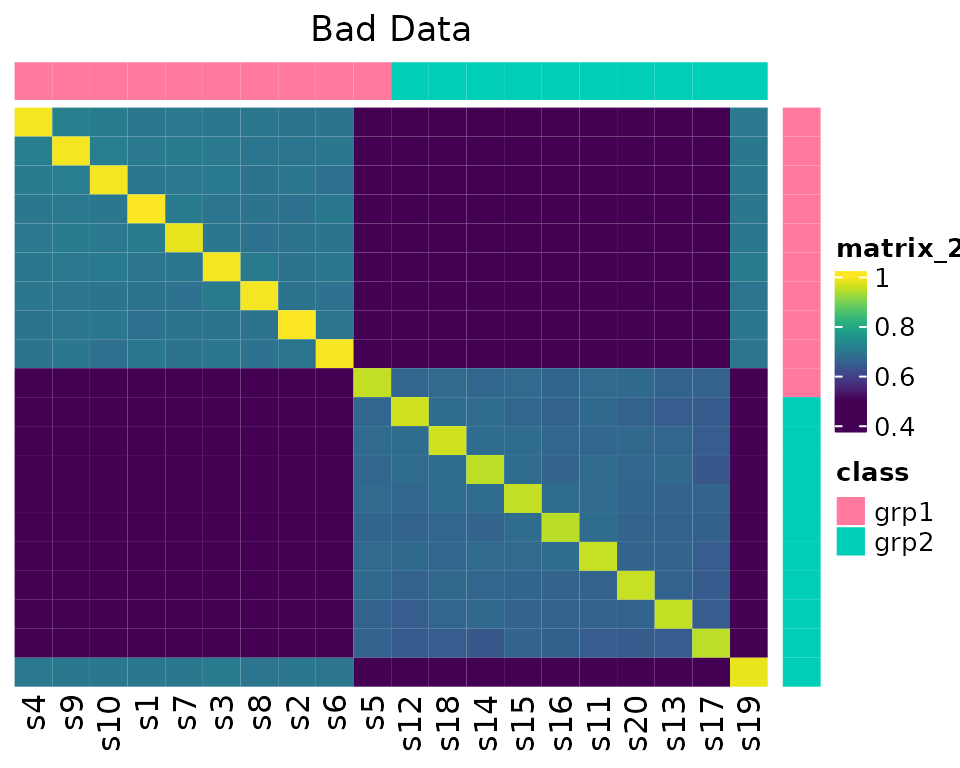

Quality Control Example
Robert M Flight
2023-07-12 20:04:07.201599
Source:vignettes/quality_control.Rmd
quality_control.RmdIntroduction
This vignette shows how the various functions in this package can be used for basic quality control, in addition to advocating a particular workflow for examining experimental data prior to analysis. These steps consist of:
- Principal components analysis
- Correlation heatmap
- Median correlation
- Feature outliers
In all of the examples, we will compare and contrast a dataset that is composed of two different conditions, and the same dataset wherein two samples have had their class labels switched by mistake, and how the visualizations above can illustrate potential problems.
Data
library(visualizationQualityControl)
library(ggplot2)
data(grp_exp_data)
exp_data <- grp_exp_data$data
rownames(exp_data) <- paste0("f", seq(1, nrow(exp_data)))
colnames(exp_data) <- paste0("s", seq(1, ncol(exp_data)))
sample_info <- data.frame(id = colnames(exp_data), class = grp_exp_data$class)
sample_classes <- sample_info$class
mix_data <- exp_data
mix_data[, 5] <- exp_data[, 19]
mix_data[, 19] <- exp_data[, 5]The data used here are from a simulated experiment, where there are two classes of samples. 1000 features measured, across 20 samples from 2 groups, with 10 in each group.
The actual values we are going to use are in exp_data.
The classes of samples are defined in sample_classes. We
will also create a version of the data that has two samples completely
switched by accident, labels and all, in mix_data.
str(exp_data)## num [1:1000, 1:20] 0.833 3.826 15.87 0.842 1.87 ...
## - attr(*, "dimnames")=List of 2
## ..$ : chr [1:1000] "f1" "f2" "f3" "f4" ...
## ..$ : chr [1:20] "s1" "s2" "s3" "s4" ...
exp_data[1:5, 1:5]## s1 s2 s3 s4 s5
## f1 0.8326984 1.795155 0.9698029 0.000000 0.000000
## f2 3.8262483 3.103851 1.9064043 3.446350 6.217429
## f3 15.8695770 7.078666 5.6856675 11.138222 7.580068
## f4 0.8422794 0.000000 1.8026048 0.171272 0.000000
## f5 1.8696869 7.724530 3.9550344 1.919573 1.087596
sample_info## id class
## 1 s1 grp1
## 2 s2 grp1
## 3 s3 grp1
## 4 s4 grp1
## 5 s5 grp1
## 6 s6 grp1
## 7 s7 grp1
## 8 s8 grp1
## 9 s9 grp1
## 10 s10 grp1
## 11 s11 grp2
## 12 s12 grp2
## 13 s13 grp2
## 14 s14 grp2
## 15 s15 grp2
## 16 s16 grp2
## 17 s17 grp2
## 18 s18 grp2
## 19 s19 grp2
## 20 s20 grp2Data Transformation
Before we do anything else, we need to transform the data. This is because this and other -omics data frequently have a distribution and error structure that many statistical methods will completely choke on, or at least give you incorrect results.
Make sure to ask if data has been transformed in any way!
Here I will show what the raw and transformed data looks like.
exp_df = as.data.frame(exp_data)
ggplot(exp_df, aes(x = s1, y = s2)) + geom_point() + labs(title = "Raw Data")
Notice the dispersion in the values as the actual values increase. Most statistical methods don’t like this.
log_data <- log(exp_data)
log_df = as.data.frame(log_data)
ggplot(log_df, aes(x = s1, y = s2)) + geom_point() + labs(title = "Log Transform")
But, lots of other methods don’t deal well with NA or
Inf values, which is what you get when you do a
log-transform on negative or zero values. There are a couple of
solutions:
- If have negatives, add the most negative + small offset
- If have zeros, use
log1pto handle zero and small values
log1_data <- log1p(exp_data)
small_value <- min(exp_data[exp_data != 0]) / 100
log2_data <- log2(exp_data + small_value)Most of the methods in this package can handle the presence of
NA or Inf, except for the principal components
analysis (PCA). Because we have physical data, the lowest value should
be zero. Therefore we can use log1p, which will keep the
zeros as zeros. Alternatively, we could use log1p for PCA,
and log for the correlations.
Principal Components Analysis
As a first step, we will use principal components analysis (PCA) to decompose the data. PCA is trying to find linear combinations of the original variables that account for the maximum amount of variance, and then finding the next combination that is orthogonal to the first, and so on and so on. It is extemely useful for confirming that the largest source of variance is the biological one, and for examining if any confounds can explain some sources of variance.
Visualize Them
To visualize the data, we plot the scores. If we want to know how
much a PC contributes to the variances, we can get a summary of them
using visqc_score_contributions.
gd_scores = cbind(as.data.frame(pca_data$x), sample_info)
gd_pca = ggplot(gd_scores, aes(x = PC1, y = PC2, color = class)) + geom_point() + ggtitle("Good Data")
gd_pca
knitr::kable(visqc_score_contributions(pca_data$x))| pc | variance | percent | cumulative | labels | |
|---|---|---|---|---|---|
| PC1 | PC1 | 630.300641 | 0.7474956 | 0.7474956 | PC1 (75%) |
| PC2 | PC2 | 15.260619 | 0.0180981 | 0.7655937 | PC2 (1.8%) |
| PC3 | PC3 | 14.393039 | 0.0170692 | 0.7826629 | PC3 (1.7%) |
| PC4 | PC4 | 13.998044 | 0.0166008 | 0.7992637 | PC4 (1.7%) |
| PC5 | PC5 | 13.624605 | 0.0161579 | 0.8154216 | PC5 (1.6%) |
| PC6 | PC6 | 13.191010 | 0.0156437 | 0.8310653 | PC6 (1.6%) |
| PC7 | PC7 | 12.649098 | 0.0150010 | 0.8460663 | PC7 (1.5%) |
| PC8 | PC8 | 12.395460 | 0.0147002 | 0.8607665 | PC8 (1.5%) |
| PC9 | PC9 | 11.904228 | 0.0141176 | 0.8748841 | PC9 (1.4%) |
| PC10 | PC10 | 11.803515 | 0.0139982 | 0.8888823 | PC10 (1.4%) |
| PC11 | PC11 | 11.425450 | 0.0135498 | 0.9024322 | PC11 (1.4%) |
| PC12 | PC12 | 11.294834 | 0.0133949 | 0.9158271 | PC12 (1.3%) |
| PC13 | PC13 | 10.735845 | 0.0127320 | 0.9285591 | PC13 (1.3%) |
| PC14 | PC14 | 10.627450 | 0.0126035 | 0.9411626 | PC14 (1.3%) |
| PC15 | PC15 | 10.585936 | 0.0125542 | 0.9537168 | PC15 (1.3%) |
| PC16 | PC16 | 10.338576 | 0.0122609 | 0.9659777 | PC16 (1.2%) |
| PC17 | PC17 | 10.188966 | 0.0120835 | 0.9780612 | PC17 (1.2%) |
| PC18 | PC18 | 9.646507 | 0.0114401 | 0.9895013 | PC18 (1.1%) |
| PC19 | PC19 | 8.852683 | 0.0104987 | 1.0000000 | PC19 (1%) |
| PC20 | PC20 | 0.000000 | 0.0000000 | 1.0000000 | PC20 (0.000000000000000000000000000016%) |
bad_scores = cbind(as.data.frame(pca_mixed$x), sample_info)
bad_pca <- ggplot(bad_scores, aes(x = PC1, y = PC2, color = class)) + geom_point() + ggtitle("Bad Data")
bad_pca
knitr::kable(visqc_score_contributions(pca_mixed$x))| pc | variance | percent | cumulative | labels | |
|---|---|---|---|---|---|
| PC1 | PC1 | 630.300641 | 0.7474956 | 0.7474956 | PC1 (75%) |
| PC2 | PC2 | 15.260619 | 0.0180981 | 0.7655937 | PC2 (1.8%) |
| PC3 | PC3 | 14.393039 | 0.0170692 | 0.7826629 | PC3 (1.7%) |
| PC4 | PC4 | 13.998044 | 0.0166008 | 0.7992637 | PC4 (1.7%) |
| PC5 | PC5 | 13.624605 | 0.0161579 | 0.8154216 | PC5 (1.6%) |
| PC6 | PC6 | 13.191010 | 0.0156437 | 0.8310653 | PC6 (1.6%) |
| PC7 | PC7 | 12.649098 | 0.0150010 | 0.8460663 | PC7 (1.5%) |
| PC8 | PC8 | 12.395460 | 0.0147002 | 0.8607665 | PC8 (1.5%) |
| PC9 | PC9 | 11.904228 | 0.0141176 | 0.8748841 | PC9 (1.4%) |
| PC10 | PC10 | 11.803515 | 0.0139982 | 0.8888823 | PC10 (1.4%) |
| PC11 | PC11 | 11.425450 | 0.0135498 | 0.9024322 | PC11 (1.4%) |
| PC12 | PC12 | 11.294834 | 0.0133949 | 0.9158271 | PC12 (1.3%) |
| PC13 | PC13 | 10.735845 | 0.0127320 | 0.9285591 | PC13 (1.3%) |
| PC14 | PC14 | 10.627450 | 0.0126035 | 0.9411626 | PC14 (1.3%) |
| PC15 | PC15 | 10.585936 | 0.0125542 | 0.9537168 | PC15 (1.3%) |
| PC16 | PC16 | 10.338576 | 0.0122609 | 0.9659777 | PC16 (1.2%) |
| PC17 | PC17 | 10.188966 | 0.0120835 | 0.9780612 | PC17 (1.2%) |
| PC18 | PC18 | 9.646507 | 0.0114401 | 0.9895013 | PC18 (1.1%) |
| PC19 | PC19 | 8.852683 | 0.0104987 | 1.0000000 | PC19 (1%) |
| PC20 | PC20 | 0.000000 | 0.0000000 | 1.0000000 | PC20 (0.0000000000000000000000000000081%) |
Note in this case PC1 contains a large proportion of variance, and separates the samples very well. The PCA plots rarely look this good in practice!
Correlation Heatmap
Correlation heatmaps show much of the same information as the PCA plots, but in a different way.
Calculate Correlations
We recommend to use our information-content-informed Kendall-tau {ICIKendallTau::ici_kendalltau} correlation, that is scale invariant, and includes some effects of missing values. Note that we take the transpose of the data, because this function assumes that data are organized with features as columns and samples as rows.
data_cor <- ICIKendallTau::ici_kendalltau(t(exp_data))This returns a list with some useful information, the actual
correlations in cor, the number of points in each
correlation in count, and which points pass the various
filters in keep. We are really only interested in
cor in this case.
We can also check that we did the right correlations by looking at the dimensions of the matrix, in this case we expect a 20 by 20 matrix.
data_cor <- data_cor$cor
dim(data_cor)## [1] 20 20We also do the same for our mixed-up data.
mix_cor <- ICIKendallTau::ici_kendalltau(t(mix_data))$corReorder Correlations
To make the heatmap more useful, we also do clustering within each of the sample classes and reorder the correlations, this highlights sub-groups within classes as well as potential outliers.
data_order <- similarity_reorderbyclass(data_cor, sample_info[, "class", drop = FALSE],
transform = "sub_1")
mix_order <- similarity_reorderbyclass(mix_cor, sample_info[, "class", drop = FALSE],
transform = "sub_1")Color by Class
We also want to color them by their class.
data_legend <- generate_group_colors(2)
names(data_legend) <- c("grp1", "grp2")
row_data <- sample_info[, "class", drop = FALSE]
row_annotation <- list(class = data_legend)Map Correlation to Color
Correlation values are mapped to colors using the
colorRamp2 function, by specifying the range of
correlations, and what colors to map them to. Here the
viridis color-scale is used because it is perceptually
uniform and is good for those suffering from various types of color
blindness. Other choices might be black -> white, or
the other color maps in the viridis package. More
information about viridis is available here.
Heatmap!
Finally we can make the heatmaps!
visqc_heatmap(data_cor, colormap, "Good Data", row_color_data = row_data,
row_color_list = row_annotation, col_color_data = row_data,
col_color_list = row_annotation, row_order = data_order$indices,
column_order = data_order$indices)
visqc_heatmap(mix_cor, colormap, "Bad Data", row_color_data = row_data,
row_color_list = row_annotation, col_color_data = row_data,
col_color_list = row_annotation, row_order = mix_order$indices,
column_order = mix_order$indices)
Note in the second example, s5 and s19 look odd.
Median Correlation
Lets also calculate the median correlation within each class.
Good
data_medcor <- median_correlations(data_cor, sample_info$class)And plot it using facets in ggplot2.
ggplot(data_medcor, aes(x = sample_id, y = med_cor)) + geom_point() +
facet_grid(. ~ sample_class, scales = "free") + ggtitle("Good Data")
Bad
mix_medcor <- median_correlations(mix_cor, sample_info$class)Plot it!
ggplot(mix_medcor, aes(x = sample_id, y = med_cor)) + geom_point() +
facet_grid(. ~ sample_class, scales = "free") + ggtitle("Bad Dat")
Proportion of Outlier Features
For every feature (the rows in our matrix), within each sample-class, calculate the trimmed (remove the x highest and lowest values) mean and sd, which features are outside a given number of sd’s, and then calculate the proportion of outliers in each sample. Samples with a deviated proportion of outliers should be examined more closely.
If you are using metabolomics data with a large number of zeros, you probably want to ignore zeros.
Good
data_outlier <- outlier_fraction(t(log_data), sample_info$class, remove_0 = TRUE)Plot them!
ggplot(data_outlier, aes(x = sample_id, y = frac)) + geom_point() +
facet_grid(. ~ sample_class, scales = "free") + ggtitle("Good Data")
Bad
mix_outlier <- outlier_fraction(t(mix_data), sample_info$class, remove_0 = TRUE)Plot them.
ggplot(mix_outlier, aes(x = sample_id, y = frac)) + geom_point() +
facet_grid(. ~ sample_class, scales = "free") + ggtitle("Mix Data")